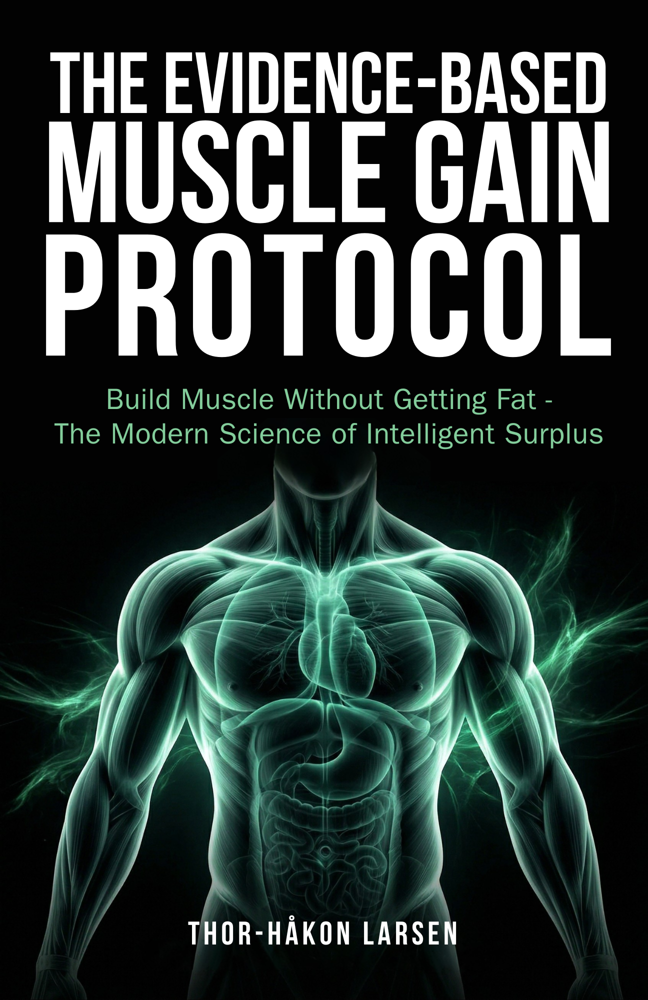

The Evidence-Based Muscle Gain Protocol
Build Muscle Without Getting Fat — The Modern Science of Intelligent SurplusBygg muskler uten å bli fet — Den moderne vitenskapen bak intelligent overskudd
Most bulking advice comes down to “eat big to get big.” The result is predictable: two kilograms of muscle, six kilograms of fat, and three months of cutting to undo the damage. The science tells a different story. Beyond 200–300 extra calories per day, additional surplus produces almost exclusively fat. The muscle protein synthesis rate is the bottleneck. Not energy.De fleste bulkerådene koker ned til «spis stort for å bli stor.» Resultatet er forutsigbart: to kilo muskler, seks kilo fett og tre måneder med kutting for å rette opp skaden. Vitenskapen forteller en annen historie. Utover 200–300 ekstra kalorier daglig produserer overskudd nesten utelukkende fett. Muskelproteinsynteseraten er flaskehalsen. Ikke energi.
About the BookOm boken
The Evidence-Based Muscle Gain Protocol synthesizes 2019–2026 surplus research into a complete system with a Surplus Calculator calibrated by training status, a Recomp Decision Tree for determining whether you should bulk or recompose, population-specific protocols for women, masters 40+, beginners, and advanced lifters, and phase management criteria that prevent the dreamer bulk before it starts. Every recommendation is evidence-graded and paired with real coaching outcomes from 88+ clients.
The Evidence-Based Muscle Gain Protocol syntetiserer 2019–2026 overskuddsforskning til et komplett system med en Surplus Calculator kalibrert etter treningsstatus, et Recomp Decision Tree for å avgjøre om du bør bulke eller rekompensere, populasjonsspesifikke protokoller for kvinner, masters 40+, nybegynnere og avanserte løftere, og fasekriterier som forhindrer drømmebulken før den starter. Hver anbefaling er evidensgradert og koblet til virkelige coachingresultater fra 88+ klienter.
What You’ll LearnHva du vil lære
- The Surplus Calculator: training status × body fat × goal = your exact surplus. Beginners: 300–500 kcal. Intermediates: 200–300. Advanced: 100–200.Surplus Calculator: treningsstatus × kroppsfett × mål = ditt eksakte overskudd. Nybegynnere: 300–500 kcal. Mellomliggende: 200–300. Avanserte: 100–200.
- The Recomp Decision Tree: when body recomposition works (four specific populations) and when it wastes six monthsRecomp Decision Tree: når rekompensering fungerer (fire spesifikke populasjoner) og når det kaster bort seks måneder
- Population protocols: tailored frameworks for women, masters 40+, hardgainers, and competitive physique athletesPopulasjonsprotokoller: skreddersydde rammeverk for kvinner, masters 40+, hardgainere og konkurranseutøvere
- Phase management: exit criteria, mini-cut timing, and bulk-to-cut transitions that prevent the dreamer bulkFasestyring: exit-kriterier, mini-cut-timing og bulk-til-kutt-overganger som forhindrer drømmebulken
- Training in surplus: why your program should change when your calories go up — volume, frequency, and periodizationTrening i overskudd: hvorfor programmet ditt bør endres når kaloriene øker — volum, frekvens og periodisering
- Nutrient partitioning: the controllable factors (sleep, stress, training status) that determine whether surplus becomes muscle or fatNæringsstoffordeling: de kontrollerbare faktorene (søvn, stress, treningsstatus) som avgjør om overskudd blir muskler eller fett
Who This Book Is ForHvem boken er for
For natural lifters, coaches, and body composition enthusiasts who are done with the endless bulk-and-cut cycle. Whether you are a beginner trying to build your first 5 kg of muscle, a woman navigating surplus for the first time, or an experienced lifter over 40 trying to add lean mass efficiently — this book meets you where you are.
For naturlige løftere, coacher og kroppssammensetningsentusiaster som er ferdige med den endeløse bulk-og-kutt-syklusen. Enten du er nybegynner som prøver å bygge dine første 5 kg muskler, en kvinne som navigerer overskudd for første gang, eller en erfaren løfter over 40 som prøver å legge på ren masse effektivt — denne boken møter deg der du er.
DetailsDetaljer
LanguageSpråk
EnglishEngelsk
GenreSjanger
Muscle Gain & Body CompositionMuskelbygging & kroppssammensetning
ComparableSammenlignbare
The Renaissance Diet 2.0 (Israetel), Scientific Principles of Hypertrophy Training (Israetel), The Muscle & Strength Pyramid (Helms)
Stay in the LoopHold deg oppdatert
Get notified when this title is available.Få beskjed når denne tittelen er tilgjengelig.
SubscribeAbonner